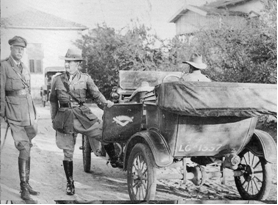
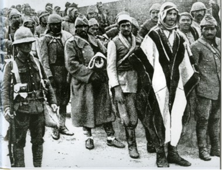

Daha Ağustos’un ortalarında Allenby, ast komutanlarına kendi taarruz planının esaslarını izah ederek onları harekât için gerekli olan hazırlıkları yapabilecek bir duruma getirmişti. Taarruz başlangıçta Eylül’ün sonunda yapılacaktı; fakat Makedonya’dan gelen 10. Tümen’in naklindeki gecikmeler taarruz başlangıcının Ekim sonuna bırakılmasına sebep olmuştu.
General Allenby basit bir zaferle yetinmek istemiyordu; onun maksadı düşmana bir imha harbi hazırlamaktı

Hafif Süvari Tugayı’ndan Tuğgeneral C. F. Cox ve Anzak Atlı Piyade Tümeni’nden Sir E.W.C. Chaytor.
Gazze’nin karadan ve denizden birkaç gün süren bombardımanı ile muharebe açılacaktı; bunu ikinci sahne olarak da Bîrüssebi’nin işgali takip edecekti. Tümgeneral Sir Philip Chetwode 53., 60. ve 74. Tümenlerden ve 6 bataryalık bir gruptan oluşan 20. Kolordu ile Bîrüssebi’nin güneybatısından taarruz ederken; Dessert Mounted Corps’un çöl atlı piyade kolordusunun komutanı Tümgeneral Sir H. G. Chauvel, Anzak atlı tümenleriyle Bîrüssebi’ye doğu ve kuzeydoğudan taarruz edecek ve garnizonun Kudüs üzerine geriye çekilmesine mani olmak için bu mevkiyi doğudan çevirecekti.
Bîrüssebi düşünce, General Allenby, Tümgeneral E. L. Buffin komutası altındaki 21. Kolordu ve 52., 54. ve 75. Tümenlerle altışar bataryalık üç ağır topçu grubundan oluşan kuvvetle Gazze’nin güneybatısından kat’i taarruza geçecekti.
Bu arada 20. Kolordu Bîrüssebi’nin kuzeyinden batıya dönerek Tellüşşeria ile Gazze arasındaki Türk mevzilerini toparlayıp kaldıracaktı. General Allenby, çöl atlı piyade kolordusunu demiryolu boyunca Irakulmenşiye hizalarından daha yukarı kuzeye yürüterek buradan batıya çarkettirerek Türklerin geri çekilmesine mani olacaktı.
İngiliz komutanı, kendi 20. ve 21. Kolorduları arasındaki boşluğu muharebenin başlangıcında Yeomanry atlı piyade tümeni ve Hecinsüvar tugayı ile –bunlar teşkilât itibariyle çöl atlı piyade tümeni kolordusuna bağlıdır– emniyet altına almak istiyordu. Ordu ihtiyatı olmak üzere Allenby’nin emrinde 10. Tümen ile 7. Atlı Piyade Tugayı ve Hint, Fransız ve İtalyan birliklerinden meydana getirilmiş 3.000 tüfek ve 6 süvari bölüğü kuvvetinde “Composit Force” (Karma Kuvvet) bulunuyordu.
Topyekûn olarak İngiliz başkomutanının emri altında Üçüncü Gazze Muharebesi’nin başlangıcında 80.000 tüfek -karşısında bulunan Türk piyadesinin yaklaşık dört misli-, 15.000’i aşkın kılıç -Türk süvarisinin on iki misli- ve 400 top -Türk topçusunun iki mislinden fazla- kuvveti vardı. Diğer İngiliz kaynaklarına göre İngilizlerin Üçüncü Gazze Muharebesi’ndeki kuvvetleri 75.000 tüfek, 17.000 kılıç ve 475 toptu. Gazze bombardımanına katılan harp gemilerinin topları bu yekûna dâhil değildir.
Taarruz için yapılan teknik ve taktik hazırlıklar İngiliz kurmayının parlak bir icraatıdır. Düşmanımızın sayıca üstünlüğünden daha fazla harp malzemesi ve yardımcı vasıtalarla üstünlüğü bizim için en büyük talihsizlik olmuştu. Denizlere hâkimiyet düşmanımıza dünyanın her bir tarafından harp malzemesi ihtiyacının sağlanmasını mümkün kılmaktaydı. Bu suretle planın icrasında elzem olan büyük ölçüde teknik hazırlıklar için ilk şart temin edilmiş bulunuyordu. Miktarı büyük yekûnlar tutan cephane ve erzak yığınları depo edilebilmiş, binlerce deve su nakliyatı için hazırlanmış, sıhhiye hizmetleri için çok geniş tedbirler alınmış ve iş görme kabiliyeti yüksek olan bir muharebe şebekesi inşa edilmişti. Ağır bataryaların cephane ihtiyacını temin için 134 adet traktör el altında bulunuyordu. Asıl taarruza başlangıç teşkil eden bombardıman esnasında yalnız İngiliz ağır bataryaları Gazze ile tahkimatı üzerine 15.000 mermi yağdırmışlardı.
Bîrüssebi’ye taarruz edecek birlikleri, menzile daha yakın tutmak için, Gazze’ye taarruz edecek 21. Kolordu’nun katar ve kafilesi de bu birliklere katılmıştı. Gazze önünde bulunan kıtalar da ihtiyaçlarını hemen gerilerinde bulunan demiryolu ve suyolunun son noktalarından temin edebiliyorlardı.
İngiliz birliklerinin taarruz için hazırlık mevzilerini işgal hareketleri daha 21/22 Ekim gecesi başlamış ve bunu takip eden gecelerde devam etmişti. İngiliz kurmayının maksada uygun tertibatı sayesinde bu hareketler pürüzsüz olarak icra edilmişti. İleri sürülmüş emniyet müfrezelerinin himayesi altında geceleyin demiryoluyla su boruları tesisatı Bîrüssebi istikametinde uzatılmıştı. Fakat taarruz hazırlıklarını gizlemek için yapılan bütün bu ihtiyat tedbirlerine rağmen bunlar uzun müddet uçaklarımızdan gizli kalamamıştı.
Düşmanın işlerini taciz etmek ve mümkün olduğu takdirde maksatları hakkında daha çok malûmat elde etmek üzere 27 Ekim’de Ali Fuat Bey’in komutası altında takviye edilmiş bir piyade alayını Tellüşşeria istikametinden ve süvari tümenini de Bîrüssebi’den Kemaltepe (230 rakımlı tepe) Tavil el Habari hattına ilerletmiştim. Kıtalarımız burada demiryolu inşaatını koruyan İngiliz süvarilerine rastlamışlar ve şiddetli bir muharebeden sonra bunları demiryolu inşaatının başladığı noktaya atmışlardı. Kıtalarımız bu muharebede iki subayla 10 er esir almışlar ve iki makineli tüfek ele geçirmişlerdi. Öğleden sonra İngilizler daha fazla kuvvet getirerek kaybettikleri mevzileri tekrar almaya gayret etmişlerse de taarruzları her defasında tamamen püskürtülmüştü. Fakat gece boyunca bu ileri sürülmüş olan kuvvetlerimizin çevrilerek mevzilerimizden arkalarının kesilmemesi için Ali Fuat Bey karanlık bastıktan sonra bunları çıktıkları mevzilere geri almıştı.
29 Ekim’de uçaklarımız, yalnız Bîrüssebi önündeki düşman kuvvetlerinin önemli ölçüde takviye edildiklerini değil, aynı zamanda Gazze’nin güneybatı cephesindeki avcı siperlerinin de daha kuvvetli olarak işgal edilmiş olduklarını tespit etmişlerdi. Ayın 30’unda da gelen haberlerden sonra artık düşmanın yaklaşık iki süvari tümeniyle Bîrüs-sebi’nin güney cephesi önünde ve bir ilâ iki piyade tümeniyle de batı cephesi önünde taarruza hazırlanmakta olduğundan şüphe edilemezdi.
Ayın 27’sinden beri Gazze üzerine fevkalâde şiddetli topçu ateşi açılmıştı. Ayın 30’unda üç düşman harp gemisi Gazze koyunda görünmüş ve mevzilerimizin sağ kanatlarıyla Gazze’den kuzeye giden yolu ateş altına almışlardı. Dir Esned demiryolu istasyonuna tam bir isabet neticesinde cephane dolu birkaç vagon havaya uçmuştu. Zaten pek sıkıntılı olan cephane durumumuz için 10 santimetrelik bin mermiyle 15 santimetrelik birkaç yüz merminin tahrip edilmesi bizim için çok hissedilir bir kayıp olmuştu.
Her şey birkaç gün sonra Bîrüssebi ve Gazze üzerine yapılacak bir taarruz karşısında bulunduğumuzu gösteriyordu. 20. Kolordumuzun cephesinde yalnız zayıf süvari kıtaları tespit edilmişti.
General Falkenhayn, bizim daha ziyade takviye edilmiş kuvvetlerle yeniden düşmanın Kavsülbasal–Kemalte-pe’deki ileri birliklerine taarruz ederek İngilizlerin taarruz hareketlerini taciz etmemizi istiyordu. General bununla bütün operatif durum üzerine müsait bir tesir icra edeceğini ümit ediyordu. Ben ise böyle bir teşebbüsün, düşmandan alınacak mevzilerde devamlı surette kalabilecek bir vaziyette olduğumuz takdirde faydalı olabileceğini düşünüyordum. Fakat zayıf kuvvetlerimiz buna müsait değildi. General von Falkenhayn benim bu itirazlarımı dikkate almadı, aksine teşebbüsün yapılmasında ısrar etti. Bununla beraber ertesi günü İngilizlerin Bîrüssebi’ye taarruzuyla bu emrin icrası kendiliğinden düşmüştü.
Bu arada ilk defa olarak von Falkenhayn ile benim aramda emirlerimiz altında bulunan Türk birliklerinin muharebe kuvvetleriyle manevra kabiliyetleri hakkında çok bariz ihtilaflar meydana çıkmıştı. Von Falkenhayn ile maiyetinin harp sahnesi ile sevk ve idare edecekleri Türk kıtalarını henüz birazcık olsun tanımaya vakit bulmadan İngilizlerin taarruz etmesi çok büyük bir talihsizlikti. Bu kötü durum Ordular Grubu karargâhıyla cephe arasındaki uzun mesafenin her türlü sözlü görüş alışverişine imkân bırakmamasıyla da daha ziyadeleşmişti. Bu şartlar altında; General von Falkenhayn’ın; benim bir Türk kıtasını bir taarruza sevketmezden önce tecrübelerime istinaden çok düşünmemi, azim ve inisiyatif eksikliğine atfetmesinden kaçınmak mümkün değildi. Bundan başka takip edilecek taktik hakkında bizim düşüncelerimiz arasındaki esaslı fark ve ihtilafın, arifesinde bulunduğumuz meydan muharebesi ve onu takip eden ricat esnasında bazı güçlüklere ve pürüzlere sebebiyet vermesinden de kaçınmak mümkün değildi.
Düşmanımızın bizce bilinen büyük üstünlüğü hasebiyle, bütün su noktaları esaslı surette tahrip edildikten sonra mevzilerimizi bırakmak ve muharebeyi kabul etmeyerek bize gelmekte olan takviye kıtalarımızın geliş istikametine doğru çekilmek en doğru hareket tarzı olurdu. Fakat kamyon kollarımızın çalışmamasından ve koşum hayvanlarının yokluğundan dolayı birçok topu, büyük miktarda cephaneyi ve yakın zamanda yerine konması mümkün olmayan sair harp malzemesini geride bırakmak veya tahrip etmek mecburiyetinde kalacağımız gibi, Enver ve General Falkenhayn kendileri tarafından planlanan taarruzundan vazgeçmekle denk demek olan böyle bir çözüm tarzına asla onay vermezlerdi.
31 Ekim 1917 günü şafakla beraber otuza yakın hafif ve ağır İngiliz bataryası 27. Türk Tümeni tarafından işgal edilmiş olan Vadiüssebi ile Bîrüssebi’den Halâsî’ye giden yol arasındaki mevzilere ateş açmışlardı. Bu ateşin himayesi altında 60. ve 74. İngiliz tümenleri taarruz için yayılmışlardı. Demiryolu ile Vadiüssebi arasındaki Türk mevzilerini zayıf düşman kuvvetleri yokluyorlardı. Smith müfrezesi –bir piyade tugayıyla takviye edilmiş olan İmperial hecin tugayı– burada Türk mevzilerini yalnız tehdit edecek, fakat bunlara taarruz etmeyecekti. 53. İngiliz tümeni Bîrüssebi üzerine yapılacak taarruzu Tellüşşeria’ya karşı emniyet altına almak ve icabında kuzey istikametinde, geriye çekilecek olan Bîrüssebi garnizonuna taarruz etmek için Es Sana civarında hazır bulundurulmuştu. Bîrüssebi’nin güney cephesi önünde yalnız zayıf İngiliz süvarisi görünüyordu.
İki tümen kuvvetindeki düşman süvarisinin geceleyin İbin’den Arara üzerine hareket ettikleri hakkında dost Bedevîlerin Albay İsmet’e getirdikleri haber, uçaklarımızın sabahleyin yaptıkları keşifle doğrulanmış bulunuyordu. Bunun üzerine Albay İsmet süvari tümenini Bîrüssebi’nin kuzeydoğusundaki tepelere göndererek tümene Bîrüsse-bi’nin düşman süvarisi tarafından kuşatılmasına mani olmak vazifesini vermişti. Etrafa hâkim bulunan ve zayıf surette tahkim edilmiş olan küçük Tellüssebi’yi (koni biçimindeki karakteristik tepelerden biri) Albay İsmet bir taburla –300 tüfek ve 6 ağır makineli tüfek– işgal ettirmişti. Kendisine ihtiyat olarak kalan son iki taburla Ras Gannam civarında hazırlanmış olan mevziinin sol kanadıyla Tellüssebi arasındaki 5 kilometrelik boşluğu kapatmaya gayret ediyordu. Ancak muharebenin iyice gelişmesinden sonra Albay İsmet, demiryoluyla Vadiüssebi arasında taarruz edilmeyen mıntıkasından birkaç bölük çekerek kendine ihtiyat temin edebilmişti. Her ne kadar biz İngilizlerin Bîrüssebi’nin güney cephesine karşı ilerleyeceklerini hesaba katmışsak da bunların Bîrüssebi’ye doğudan taarruz etmek gibi cüretkâr bir fikir besleyeceklerine ihtimal vermemiş ve bunun için de bu gibi bir hâl karşısında gerekli olan hazırlıkları yapmamıştık.
Saat 8 ile 9 arasında İngilizler, güneybatı cephesinde topçu tarassudunun himayesi için Türklerin esas muharebe hattından ileri sürülmüş bir istinat noktasını hücumla zaptetmişlerdi. Bu küçük tabyayı savunanlar cesur bir müdafaadan sonra teslim olmuşlardı.
Kısmen gayet iyi olan Türk bataryalarının ateşi altında İngiliz piyadesi, öğleden evvelki saatlerde 27. Tümen’in mevzilerine 400–600 metreye kadar sokulabilmişti. İngiliz bataryalarının bir kısmı Türk mevzilerinin yakın mesafelerine gelmişler ve onların esasen zayıf olan tel örgü manileri tahrip ateşi altına almışlardı. Saat 12.15’te İngilizler hücuma kalkmıştı. Türk siperlerinin bir kısmını ele geçirebilmişlerse de diğerleri için çok telefat vererek çetin muharebeler yapmak mecburiyetinde kalmışlardı. Onlar; Vadiüssebi gerisine çekilmekte olan 27. Türk Tümenini takip etmeyip, aksine aldıkları mevzileri müdafaa için tertiplenmeye başlamışlardı. General Allenby kıtalarına daha sonra tedariki gereken suyu göz önünde tutarak Bîrüssebi mevkiinin yalnız çöl atlı piyade kolordusu “Dessert Mounted Corps” tarafından zapt ve işgal edileceğini emretmişti. Çöl ve çöle benzeyen mıntıkalarda su tedariki meselesinin komutanlığın kararlarına yaptığı tesir hakkında çok istifadeli bir olay.
Bîrüssebi doğu cephesi önünde düşman süvarisi, saat 8 ile 9 arasında Vadi el Milh istikametinde Tellüssebi’ye doğru yoklamaya başlamış ve kısa bir müddet sonra bir İngiliz süvari alayı da Hirbet Salanta civarında Bîrüssebi–Halilürrahman şosesine varmıştı. İngiliz keşif kolları burada Türk süvari tümeninin emniyet kıtalarıyla temasa geçmiş fakat bütün gün muharebe meydanının bu sahasında hiçbir muharebe olmamıştı. Buna mukabil öğleden evvel Yeni Zelanda süvari tugayının yere inmiş avcıları Tellüssebi’ye cepheden taarruza kalkmışlardı. Örtüsüz olan arazide Türk makineli tüfeklerinin ateşi İngiliz taarruzunu az bir müddet sonra durdurmuştu. Ancak İngilizler çevirme taarruzu için taze kuvvetler getirerek Tellüssebi’nin kuzey ve güney yanlarına taarruz ettikten sonra saat 15’te Türk mevziini hücumla zaptetmeye muvaffak olmuşlardı. Bu mevziin müdafaasını üstlenmiş olan zayıf Türk taburu çok büyük bir cesaretle dövüşmüş ve vazifesini tamamen yerine getirmişti. Bu tabur iki İngiliz süvari tümenini altı saat müddetle durdurmuş ve bu şekilde onların çevirme hareketlerini Bîrüssebi–Halilürrahman şosesinden daha ileriye götürmelerine mani olmuştu. Uçaklarımızın attığı bombalar yaya savaşan İngiliz süvarilerinin hayvanları arasında oldukça büyük kayıplara sebep olmuştu.
Ras Gannam ile Tellüssebi arasına sokulan iki Türk taburu, İngiliz süvarisinin taarruzuna uğradıkları vakit, kolordu komutanının emriyle Bîrüssebi istikametinde Vadiüssebi gerisine çekiliyorlardı. İngiliz süvariler zayıf olan Türk hatlarını yararak taarruzlarını Bîrüssebi mevkiinin içerisine kadar götürmüşlerdi; hatta burada İsmet Bey’le maiyetinin esir düşmesine ramak kalmıştı. General Chetwode, 4. hafif süvari tugayına şehri zaptetmelerini emretmiş ve cesur tugay komutanı General W. Grant da bu vazifeyi bir süvari hücumuyla halledivermişti.
Albay İsmet tarafından emredilen Bîrüssebi’deki su kuyularının tahribi maalesef yalnız kısmen icra edilebilmişti.
Huleykat’taki ordu komutanlığına öğleden evvelki saatler zarfında Bîrüssebi’yi tehdit eden tehlikeye dair doğru bir fikir verebilecek haber gelmemişti. Daha saat 11.40 sularında Albay İsmet kendi güney ve güneybatı cephesi karşısında bulunan düşman kuvvetlerini yalnız bir piyade tümeni olarak tahmin etmişti. Biraz sonra o, ordu komutanlığından direktif ve takviye kıtaları için de ricada bulunmuştu. Ben kendisine mevzilerini tutmasını emretmiş ve kendisine yardım etmek üzere de 24. Tümen’in Ebu Rukeyk civarında bulunan müfrezesini Bîrüssebi’ye yürütmüştüm. Bîrüssebi mevzilerinin boşaltılması bu zamanda artık söz konusu olamazdı ve pek çok zayiata mal olurdu.
Saat 13.45’te Albay İsmet, 67. Alay’ın mevzilerini kaybettiğini ve kıtalarıyla Vadiüssebi gerisine gitmek niyetinde olduğunu bildirmişti. Bu benim ondan aldığım son haberdi. Biraz sonra Huleykat ile Bîrüssebi arasındaki telin kopmuş olduğu anlaşılmıştı. Bütün diğer bağlantılar da kesilmiş olduğundan Albay Herrgott’tan otomobiliyle Bîrüssebi’ye gitmesini ve burası düşmüş olduğu takdirde kıtaları Tellüşşeria–Ebu Huf–Zahiriye hattına çekilmesini ve bu hattı tutmaları için adıma emir ve talimat vermesini rica etmiştim. Albay Herrgott, Ebu Rukeyk civarında Bîrüssebi’den geriye çekilen kıtalarla karargâhlara rastlamış ve İngilizlerin Bîrüssebi’den daha ileriye geçmediklerini ve takip etmediklerini haber almıştı.
Bu günlerde henüz hiçbir muharebeye girmemiş olan 3. Süvari Tümeni’ne de Zahiriye civarında Kudüs’e giden şoseyi kapatmasını emretmişti. Aynı şekilde hiç dokunulmamış ve takviye edilmiş olan 24. Tümen’in alayına da Ebu Huf’u işgal etmesini emretmiş ve Bîrüssebi’den geri çekilmekte olan 27. Tümen aksamına da Tellüşşeria’yı toplanma noktası olarak göstermişti.

İngilizler tarafından esir alınan birliklerimiz.
Bîrüssebi Muharebesi İngilizlere büyük bir başarı sağlamıştı. Onlar 9 Türk topu ele geçirmişler ve 70 subayla 1.458 er esir almışlardı. Fakat Bîrüssebi garnizonunun geri çekilme yolunu keserek ekseriyetini esir etmeye muvaffak olamamışlardı. General Chauvel’i küçük bir istinat noktası olan Tellüssebi altı saat alıkoymuş, Smith müfrezesi de yalnız Türk mevzilerini tehdit etmiş ve fakat bunlara taarruz etmemiş, 53. İngiliz tümeni de bütün gün Vadi Hanafiş’in doğusundaki tepelerde iş görmeksizin durup kalmıştı.
27. Tümen’in mevzilerine taarruz İngilizlere 139 ölü ve 1.010 yaralıya malolmuştu.
Muharebe günü saat 15.30’da Huleykat’taki ordu karargâhına; yeni emir ve komuta bölümünün aynı gün saat 23’te yürürlüğe gireceğine dair General von Falkenhayn’ın emri geldi. Bîrüssebi tutulmazsa 7. Ordu adım adım Şeria Vadisi gerisine ve Zahiriye–Yuda güney ve güneydoğusundaki dağ geçitleri hattına çekilecekti. Bu hat her halde elde tutulacaktı.
Albay Herrgott, Remle’de 19. Tümen’in 57. Alayı’nın, bir topçu taburunun ve Yafa civarındaki sahil muhafaza kıtalarının emir ve komutasını üstlenecek ve bu kıtalarla İngilizlerin muhtemel bir çıkarma hareketine karşı koyacaktı. Ordular Grubu Komutanlığı şimdilik Halep’te kalacaktı.
Cephedeki komuta durumunun değiştirilmesi için zaman iyi seçilmemişti; çünkü ne 7. ve 8. Ordu komutanlıkları arasında doğrudan doğruya ve ne de 7. Ordu komutanlığıyla emri altına girecek birliklerin arasında herhangi bir irtibat mevcuttu. Bu sebepten zaruri olarak şimdilik bütün cepheye komuta etmek mecburiyetindeydim. Ancak birkaç gün ve birçok bariz pürüzlerden sonra cephede yeniden belirgin bir komuta durumu kurulmuş bulunuyordu.
1 Kasım’da İngilizler taarruzlarına devam etmediler. Onlar yalnız Bîrüssebi’nin kuzeydoğusundaki tepelere kuvvetli emniyet kıtaları sürmekle yetinmişlerdi. Yalnız iki tarafın süvari birlikleri arasında küçük ölçekte çatışmalar meydana gelmişti.
İngilizlerin Bîrüssebi’deki kuyuların randımanını haddinden fazla tahmin ettikleri ve belki de kuyuların bir kısmının Türkler tarafından tahrip edilmiş olduğunu hesaba katmamış oldukları anlaşılıyor; çünkü her iki İngiliz süvari tümeni su ihtiyaçlarının temini hususunda çok büyük zorluklarla karşılaşmışlar ve birkaç tugayı hayvanlarını sulamak için Bîrüssebi’nin 20 km. doğusunda bulunan su mahalline götürmeye mecbur olmuşlardı. Yuda dağlarının güney eteklerinde Tellüşşeria–Ebu Huf–Zahiriye hattında yeni bir müdafaa cephesi kurabilmemizi, İngilizlerin Bîrüssebi’nin işgalinden sonra su tedarikinde maruz kaldıkları zorluklar neticesinde yaptıkları duraklamaya borçluyuz.
27. Tümen’in Bîrüssebi’den kurtulan kısımları Halâsî mevziini ve 16. Tümen’in bir alayı ile üç bataryası Ebu Huf hattını işgal etmişlerdi. Bu su mahalliyle Zahiriye arasındaki araziyi süvari tümeni (bir alayı hariç) emniyet altına almış ve Zahiriye civarında Albay Willmer 24. Tümen’in takviye edilmiş bir alayı ile durmuş ve Yuda’ya da Süvari Tümeninin 3. Alayı sürülmüş bulunuyordu. Ebu Huf ve Zahiriye grupları 3. Kolordu Komutanlığının emri altına verilmişti. Bir piyade alayı ile 4 bataryayı 26. Tümen’in mevzilerinden alarak Tellüşşeria’nın kuzeybatı civarında emrime hazır bulunduruyordum.
20. Kolordu cephesinde şiddetli keşif kolu faaliyeti haber verilmişse de ne bu kolordu ve ne de 22. Kolordu’ya 31 Ekim ve 1 Kasım günlerinde taarruz edilmişti. Gazze’nin gerek denizden gerekse karadan bombardımanı eksilmeyen bir şiddetle devam etmişti. Gazze mevzilerine ara sıra, zararı görülmeyen gazlı mermiler de atılmıştı. Buna karşılık hendekler ve bilhassa Gazze mevzilerinin telörgüsü manileri sürekli bir ağır bombardıman neticesinde gitgide pek ciddî hasara uğramış ve bu bombardımanın doğurduğu kanlı zayiat da yavaş yavaş hissedilmeye başlamıştı. Böyle bir bombardıman gününde düşman topçu ateşiyle Gazze garnizonundan 1 subay ve 24 er şehit düşmüş ve 4 subay ile 46 er de yaralanmıştı.
Bütün bombardıman devamınca İngiliz topçusu, bataryalarımızdan birisini yakalayarak ateşiyle susturmaya muvaffak olamamıştı. Bu sebepten topçumuz hemen hiç zayiat vermemişti. Çok sınırlı olan cephane mevcudundan dolayı düşman ateşine karşılık vermekte ben topçumuzu ağır davranmaya mecbur ediyordum.
Denizden bombardımana on altı gemi (İngiliz, Fransız) iştirak etmişti; bataryalarımızdan birinden aldığı tam isabetle Requin Fransız kruvazörü mevkiini terke mecbur olmuştu.
1 Kasım akşam saat 22.20’de 8. Ordu Komutanlığına, Ordular Grubu Komutanlığının bir emri gelmişti. Buna göre 19. Tümen 1/2 Kasım gecesi 7. Ordu Komutanlığının emrine verilmek üzere Tellüm–Lehe’ye sürülecek ve 7. Ordu’nun Kudüs’e giden yolları kapamak hususundaki en mühim vazifesinin kolaylaştırılması için 2 Kasım günü Tellüşşeria civarından orada bulunan kuvvetler ve 26. Tümen ile Bîrüssebi istikametine bir taarruz yapacaktı. Şayet 7. Ordu Komutanlığı telefon irtibatlarının kifayetsizliğinden dolayı emrolunan taarruzun sevk ve idaresini üzerine alamazsa, bunu 8. Ordu Komutanlığına devredecekti ve bunun için her iki komutanlık birbiriyle temas edeceklerdi. Tellüm-Lehe’de hiç su yoktu. Bunun için ben, 2 Kasım sabahı erkenden 19. Tümen’i Avuk el Hacı Süleyman’a yürüttüm. Taarruzun 2 Kasım’da yapılması artık mümkün değildi. Halilürrahman’da bulunan 7. Ordu Komutanlığı ile Kudüs üzerinden bir irtibat teminine muvaffak olununcaya kadar uzun saatler geçmiş ve geniş sahaya yayılmış olan birlikleri tam zamanında taarruz için toplamak ve hazırlamak teknik bakımından mümkün olamamıştı. Grup komutanlığının Halep’te kalması bir defa daha mahzurunu göstermişti. Komutanlığın emirleri ve aynı şekilde cepheden gelen haberler, alıcısının eline geçinceye kadar birçok saat geçiyordu. Türk cephelerinin sınırlı vasıtaları, Ordular Grubu Komutanlığındaki subayların Avrupa cephelerinde alıştıkları gibi, iyi ve iş görecek kabiliyette tel irtibatı vücuda getirilmesine müsait değildi. Herhalde Ordular Grubu Komutanlığı, benim kendisine gönderdiğim ve 1 Kasım günü Bîrüssebi’de ve civarında düşmanın iki ilâ üç süvari, üç ilâ dört piyade tümeni tespit edildiğini bildiren raporumu, kendi emrinin dağıtılması esnasında henüz almamış bulunuyordu.
Bundan başka Ordular Grubu Komutanlığa elinde bulunan işe yaramaz haritalardan dolayı Tellüşşeria’dan Bîrüssebi’ye karşı yapılacak bir taarruzun ancak Kemalt-epe’de ve Tavilülhabari civarında bulunan düşman kuvvetlerine aynı zamanda yapılacak bir taarruzla bu hareketin sağ yanı emniyet altına alındığı takdirde mümkün olabileceğini kestirememişti. Vaziyet hakkındaki izahatım neticesinde General Falkenhayn emrini evvela birliklerin yalnız taarruza hazırlanmaları şekline çevirerek değiştirmiş ve ertesi günü Gazze’de meydana gelen hadiseler neticesinde emrini tamamen geri almıştı.
1/2 Kasım gecesi, uzun müddetten beri beklediğimiz, Gazze sahil mıntıkasındaki mevzilerimize taarruz başlamıştı. Refet’le mutabık kalarak en ileride düşman topçu ateşine bilhassa maruz olan avcı siperlerimizin yalnız zayıf emniyet kıtalarıyla işgal edilmesine ve bir taarruz esnasında esas müdafaanın ikinci avcı siperleri hattında yapılmasına karar vermiştim.
İngilizler taarruzlarına Hanyunus–Gazze yolunun batısı yakınında bulunan ve bizim en ilerideki hattımızın ilerisine sürülmüş olan bir istinat noktasını almakla başlamışlardı. Bu noktanın günlerce bombardıman edilmesi neticesinde telörgüsü manileri o derece tahrip edilmişti ki, İngilizler kısa bir hazırlık ateşinden sonra ilk hamlede burasını ele geçirmeye muvaffak olmuşlardı; fakat tam burada yerleşmek istedikleri sıralarda bataryalarımızın tam vaktinde açmış oldukları imha ateşiyle ciddî telefat vermişlerdi. Sabahın saat 3’ünde General Bulfin 52. Tümeni bir tugayıyla takviye edilmiş 54. Tümeni kısa bir ateş baskınından sonra, sahil mıntıkasındaki en ileri Türk mevzilerine karşı hücuma kaldırtmıştı. Hücuma geçenler ilk hamlede muhtelif yerlerdeki Türk hendeklerine girmeye muvaffak olmuşlardı. İngilizler tanklarının himayesi altında sahil boyunca en ilerdeki Türk mevzilerini yarmışlar ve bizim esas muharebe hattımızın sağ kanat istinat noktası olan Elmine’yi almışlardı. Türklerin muhtelif lokal karşı hücumları düşman tarafından püskürtülmüştü.
İngiliz kaynakları, General Bulfin’in neden dolayı kendi emrinde bulunan kuvvetlerin yalnız pek az kısmını (üçte birini) taarruza geçirdiğine ve taarruzu yalnız Gazze’nin güneybatısına yönelttiğine dair hiçbir malûmat vermemektedirler.
İngilizler Gazze’ye karşı bu ilk taarruzlarının başarısını 134 subay 2.562 er kaybetmek suretiyle elde etmişlerdi. Bu da Gazze’yi savunanların iyi döğüştüklerine ve mevzilerini cesaretle müdafaa ettiklerine delil teşkil etmektedir. Belki bu ağır zayiat İngilizlerin ertesi günlerde Gazze taarruzuna devam etmemelerinin ve evvela muharebe meydanının doğu kısmındaki hadiselerin gelişmesini beklemelerinin sebebini teşkil eder.
2 Kasım sabahı Albay Refet Gazze’nin kuzeyinde emrimde bulunan 7. Tümen’le karşı taarruza geçerek elden çıkan mevzilerin geri alınması için benden müsaade istedi ve aldı. Refet saat 12’de öğleyin 7. Tümen’in iki alayını Gazze’nin kuzeybatısındaki Şeyh Rıdvan denilen büyük kumluktan Elmine istikametinde ilerlemişti; maalesef bu karşı taarruz iyi yöneltilememişti. Her ne kadar bu taarruz toz ve dumanlarla İngiliz kara bataryalarına karşı örtülmüşse de Gazze koyunda yatan harp gemilerine tamamen yanını vermişti. Bu taarruzun muvaffak olmamasındaki birinci sebebi de bu gemilerin tesirli ateşine atfetmek gerekir. Bununla birlikte 7. Tümen, Şeyh Rıdvan’da sahil ile Gazze şehri arasındaki araziyi tıkamaya muvaffak olmuştu.
Gün sona ererken Elmine müstesna olmak üzere sahil mıntıkasında bütün esas müdafaa hattı henüz elimizde bulunuyordu; Gazze’nin diğer cephelerinde de en ilerdeki emniyet hattı dahi Türklerin tamamen elinde idi. 20. Kolordu’nun cephesinde 2 Kasım günü tamamen sükûnet hüküm sürmüş ve sol kanadımızda da aynı günde önemsiz muharebelerden başka bir hadise olmamıştı.
İngiliz Yarbayı Newkomb savaştan önce Güney Filistin’de ölçümler yapmış ve bu esnada halk ile memleketi iyice tanımıştı. Bu yarbay 90 kadar hecin süvarisi ve birkaç Bedevî ile bizim sol kanadımızı kuşatmayı ve buradaki Arapları Türkler aleyhinde tahrik etmeyi teklif etmiş ve bu işi üzerine almıştı. Newkomb 40 saat boyunca Halilürrahman–Zahiriye şosesini kapatmaya ve bu suretle ehemmiyetsiz olmayan lokal bir kargaşalık oluşturmaya muvaffak olmuştu. Bundan sonra yarbay ve erleri, Kudüs’ten getirilen Alman kamyon koluna mensup şoförler tarafından, cesurane bir müdafaadan sonra esir edilmişlerdi.
3 Kasım’da Gazze’de topçu düellosu bütün şiddetiyle devam etmişti. İngilizlerin batı kanatlarının en sonundaki mevzilerini ıslah için yapmış oldukları pek çok teşebbüs Türkler tarafından püskürtülmüştü.
Ebu Huf civarında kısa bir topçu hazırlığından sonra 53. İngiliz tümeni Türk mevzilerine karşı taarruza geçmişti. Burada çok inatçı ve ağır zayiat verdiren muharebeler olmuştu. Geceleyin Ebu Huf’a ileri alınan 19. Türk Tümeni’nin müdahalesiyle bütün bu taarruzlar tamamen püskürtülmüştü. Her ne kadar İngiliz süvarisi geçici olarak Ras En-Nukb’da yerleşmiş ise de bu hal Ebu Huf’daki olayların cereyanına tesir etmemişti.
Aynı muvaffakıyetsizlik ertesi günü İngilizlerin çok inatçı fakat yine yetersiz kuvvetlerle Ebu Huf tepelerine tekrar ettikleri taarruzlarda da kendini göstermişti. Ebu Huf civarına kısım kısım yapılan ve hissedilir kayıplar getiren bu taarruzlara İngilizleri yönelten mecburiyet, yeni su mevkilerini ele geçirmek olsa gerektir.
4 Kasım günü uçaklarımız Bîrüssebi’de ve batısında sayısı birçok tümen tahmin edilen düşman kuvvetlerinin yığıldığını bildirmişlerdi. Bu haber benim Tellüşşeria’ya bir taarruz yapılacağı hakkındaki düşüncemi takviye ediyordu. Düşmanın 7. ve 8. Ordularımızın arasını yarmasını engellemek için gereken kuvvetlerin hazırlanması, bana bundan böyle yapılması en önde gelen bir vazife görünüyordu.
Fakat bu maksat için gerekli olan kuvvetleri serbestleştirmek ancak Gazze’nin tahliyesiyle sağlanabilirdi. Bunun için hiç istemeyerek Gazze’nin tahliye edilmesine müsaade edilmesini Ordular Grubu’ndan ricaya karar vermiştim.
Refet kendi tümenlerinin muharebe kuvvetinin sekiz gün süren bombardıman ve 7. ve 53. Tümenler tarafından yapılan sayısız karşı taarruzlar neticesinde hissedilir derecede zayıfladığını haber vermişti. Düşmanın durmaksızın icra etmekte olduğu trampet ateşi, subaylarıyla erlerinin sinirlerine tesir etmekten geri durmamıştı. Gazze’yi tutmak mecburiyetinde olduğu takdirde Refet’in taze kuvvetlere ihtiyacı vardı. Ben ona bu kuvvetleri gönderecek durumda değildim. Elimde bulunan bütün ihtiyatlarla 54. ve 26. Tümenlerin mıntıkasından çektiğim bütün birliklere Tellüşşe-ria ve Ebu Huf civarında ihtiyaç vardı.
General von Falkenhayn Gazze’nin boşaltılması için rica edilen müsaadeyi vermişti. Nihayet kamyonlar için benzin de gelmiş olduğundan Refet birçok kamyon kollarıyla 4/5 ve 5/6 Kasım gecelerinde topçusunun bir kısmıyla cephanesinin büyük kısmını geriye gönderecekti. 6/7 gecesi de 7. Tümen Hes Vadisi gerisinde Herbiye civarındaki ikinci mevziimizin sağ kanat mıntıkasına, 3. Tümen Beyti Hanun’da hazırlanmış bir sürgü mevziine; 53. Tümen de kolordu ihtiyatı olarak Beyt Cerca’ya çekilecekti. 20. Kolordu, mevzilerini yeni emre kadar tutacaktı.
5 Kasım günü büyük muharebe olmaksızın geçmişti. General von Falkenhayn’ın Gazze’nin bu hal ve şartlar altında boşaltılmasının haklı ve yerinde olup olmadığı hakkındaki sorusunu, alınan tedbirlerin muhafaza edilmesi ricasıyla cevaplamış ve sebep olarak da bir düşman tazyiki altında yapılacak Gazze tahliyesinin mecburiyetten pek çok malzeme ve cephane kaybına malolacağını bildirmiştim. Ordular Grubu Komutanlığı nihayet Kudüs’e gelmişti.
General Chetwode Bîrüssebi’de bulunan kıtaların su tedariki hususunda beklenilmeyen zorluklarla karşılaşması ve Ebu Huf kuyularını ele geçirmek hususunda yapılan pek çok tecrübenin muvaffakıyetsizlikle neticelenmesi karşısında Tellüşşeria’ya karşı planlanan yarma hareketini 6 Kasım sabahına kadar ertelemeye mecbur olmuştu. Generalin kıtalarının en dış kanadındaki Imperial Hecin Tugayı, Ras En-Nukb’da taarruzun sağ yanını emniyet altında bulunduracaktı. Ebu Huf’a karşı yeniden 53. Tümen ve bunun solunda Yeomanry altı piyade tümeni hareket edecekti. Bu tümen ile demiryolu arasında 74. ve 60. Tümenler taarruz için ileri atılacaklar ve 60. Tümen’in solunda geriye doğru kademe halinde 10. Tümen bulunacaktı. 20. ve 21. Kolordular arasındaki gediği Avustralyalı altı piyade tümeni kapatacak ve Anzak tümeni de Bîrüssebi’de hazır bulundurularak yarma muvaffak olduğu takdirde Türklerin takibini üstlenecekti.
Sabahın erken saatlerinde 74. İngiliz tümeni, evvelce topçu hazırlığı yapmaksızın 27. Türk Tümeni’nin Bîrüssebi Muharebesi’nde maneviyatı sarsılmış zayıf bakiyesi tarafından işgal edilmiş bulunan Halâsî mevziine tamamen baskın şeklinde taarruza geçmişti. Bu mevziin küçük istinat noktalarının birçoğu kendilerini cesaretle müdafaa etmiş ve birkaç noktada ihtiyatlar tarafından lokal karşı taarruzlar da yapılmıştı; fakat saat 8.30’da bütün istinat noktaları İngilizlerin eline geçmişti. Öğle vaktine kadar düşman Tellüşşeria’nın güneyinde demiryoluna yaklaşmak için çalışmıştı. Fakat öğleden sonraki saatlerde istasyonun suyu bol olan kuyusunu ele geçirmek hususunda yaptığı mükerrer teşebbüsler püskürtülmüştü.
Halâsî mevzii alındıktan sonra 60. ve 10. Tümenlerin bütün ağır ve hafif bataryaları ateşlerini bizim Kavuka mevziimizin doğu kısmına karşı yöneltmişler ve saat 12.30’da 60. Tümen’in piyadesi demiryolunun üzerinden Kavuka mevziinin doğu yanına karşı ilerlemiş ve yayılmaya başlamıştı. Cesur bir müdafaadan sonra burayı işgal eden 16. Tümen’in zayıf kuvvetli bir alayı, Şeria Vadisi gerisindeki Ebu Cerrar mevziine çekilmişlerdi. İngilizler Kavuka mevziinin yalnız doğu kısmı ile yetinerek batı istikametinde çekilen Türkleri yalnız keşif kollarıyla takip etmişlerdi. İngilizler piyadelerinin büyük kısmını kuzeye döndürmüşler ve demiryolunun batısından kuzey istikametinden ileriye sevk etmişlerdi.
Geniş ve derin oyulmuş Şeria Vadisi’nin kuzey kenarında Ebu Cerrar ile Tellüşşeria arasında bu sırada 20. Türk Kolordusu’nun azimkâr komutanı emri altında bulunan kuvvetlerle yeni bir müdafaa cephesi kurmuştu. Tellüşşeria civarında Türk hattı vadinin güney kıyısına varıyor ve buradan doğu istikametinde Ebu Huf’a gidiyordu. Her iki grup arasında kilometrelerce uzanan ancak gündüzleri Ebu Huf grubu topçusunun hâkimiyeti altında bulunan geniş bir gedik bulunuyordu.
Türk bataryalarıyla makineli tüfeklerinin kuvvetli müdafaası İngilizlerin vadiyi geçmek hususunda giriştikleri bütün teşebbüsleri akamete uğratmıştı. Çöken karanlık muharebeye son vermişti.
Ebu Huf civarında da bugün İngiliz tümenleri taarruzlarını yenilemişlerdi. Kuvvetli topçu hazırlığından sonra 53. Tümen ve yere inmiş süvariler cesur bir taarruz yapmışlardı. Onlar, muhtelif noktalarda Türk hatlarına girmeye muvaffak olmuşlardı; fakat üç taraftan yapılan çok azimkâr bir karşı taarruz neticesinde ağır zayiat vererek hendeklerimizden tekrar dışarı atılmışlardı. 19. Türk Tümeni daha önceden kazanmış olduğu şöhretine hakkıyla lâyık olduğunu göstermişti. Muharebe meydanının bu kısmında da basan karanlık çok çetin savaşlara son vermiş ve her iki taraf birbirleriyle sıkı bir muharebe teması muhafaza ederek geceyi geçirmişlerdi.
Düşman tarafından fark edilmeksizin ve zayiat da vermeksizin 6/7 Kasım gecesi Gazze’nin boşaltılması başarılmıştı. Refet’in gayet iyi düşünülmüş, maksada uygun ve son derece takdire lâyık tertibat ve talimatı ve şahsî azim ve iradesi sayesinde –bombardımandan harap olmuş tek bir top müstesna olmak üzere– bütün toplar ve cephanenin tamamı geriye alınmıştı. Gazze’den çıkan derin kumlu yolların üzerinde bizim Alman şoförlerinin icraatı da her türlü övgünün üstündeydi. Ayın 7. günü sabahleyin basan sis, tahliye işleriyle 22. Kolordu birliklerinin geri çekilmesini kolaylaştırmış ve 7., 3. ve 53. Tümenler öğleden evvelki saatlerde emrolunan hedeflerine varmışlardı.
Halâsî ve Kavuka mevzilerinin kaybından sonra ben, 54. ve 26. Tümenlerinin mevzilerini boşaltmalarını ve Fuilis vadisinin gerisine çekilmelerini emretmiştim. Fakat maalesef, düşmanın esas baskısının Ebu Huf-Zahiriye mıntıkasını tehdit etmekte olduğu fikrini besleyen General von Falkenhayn’ın emri üzerine tertibatı geri almış 54. ve 26. Tümenlerin bölgelerini son derece zayıf bırakarak ertesi günü kuvvetli bir taarruz grubunu -mümkünse tam bir tümeni– El Cindi civarında hazır bulundurmaya mecbur kalmıştım. Tellişşeria grubuyla bu taarruz kolu güneydoğu istikametinde ilerleyecekti.
Genç Türk subaylarının ahval-i ruhiyesini hiçbir şekilde anlamaksızın General von Falkenhayn bu kolun sevk ve idaresini Yarbay Herrgott’a vermek istemişti.
Şimdiye kadar ortaya çıkan birçok hallerde komutanlık vasıflarını ispat etmiş olan 20. Kolordu’nun kabiliyetli ve azimkâr komutanı Albay Ali Fuat (Cebesoy) lâyık olmadığı bu muameleyi en büyük bir şiddette protesto etmişti. Ben de, onun haklı olan bu düşüncesine göz yumamazdım. Bunun için bu taarruzun kendisine verilerek şimdiye kadar emri altında bulunan kıtaları ayrıca 26. Tümen’den iki tabur ve 54. Tümen’den beş tabur ve dört batarya ile de takviye etmiştim. Havacılarımıza da düşmanın Tellişşeria’daki kuvetlerini ertesi günü bombalamalarını emretmiştim.
Bu emir ve tertibat neticesi olarak birliklerin pek ziyade parçalanması; emirlerin tebliğini ve kıtaatın iaşe ve ikmalini son derece güçlendirişti. Lâkin Ordular Grupu Komutanlığı’nın yerine getirebilmek için bu güçlüklere katlanmak zorundaydık.
Çok şükür gelişmeler, icrası emrolunan bu karşı taarruzu önlemiş bulunuyordu. 7 Kasım günü sabahleyin şafakla beraber İngilizler, Türk emniyet kıtalarını bastırmışlar ve 74. Tümenleriyle Tellüşşeria-Ebu Huf arasındaki seyrek Türk hattını yarmışlar ve 60. Tümenleriyle de Tellüşşeria civarında ve batısında olan Türk mevzilerine taarruz etmişlerdi. Türkler cesurane müdafaa etmişlerse de nihayet üstün kuvvetler karşısında çekilmeye mecbur olmuşlar ve İngilizler de Şeria Vadisi’nin kuzey kıyısına ayak basabilmişlerdi. Türk mevzii yaklaşık 15 km’lik bir genişlikte yarılmıştı.
10. İngiliz tümeni aynı günün sabahında, yaklaşık 200 er tarafından müdafaa edilen Ebu Cerrar istinat noktasını ele geçirmişti.
Kendisine karşı taarruz için verilmiş olan kuvvetlerle Ali Fuat (Cebesoy), El Cindi ve Tel Ebu Dilah arasında yeni bir müdafaa hattı tesis etmişti. İngilizler, tereddütlü bir şekilde yalnız Huç istikametinde onları takip etmişlerdi.
Tellüşşeria yarma hareketinin başarıyla sonuçlandığını zanneden İngiliz başkomutanlığı ayın 6. günü öğleden sonra İmperial Hecinsüvar Tugayı, 53. Tümen ve Yeomanry atlı piyade tümeninin, Ebu Huf güneyi ve Ras En-Nukb tepeleri hattında savunmaya yönelik bir koltuk oluşturmalarını emretmişti. İşte 7. Türk Ordusu’nun zorluk çekmeksizin düşmandan sıyrılmasını sağlayan bir emir! Ayrıca General Chetwode diğer iki atlı piyade tümeniyle ve kendisi tarafından tayin edilecek bir piyade tümeniyle ayın 7’sinde sabahleyin erkenden Cemame ve Huç üzerine ilerleyecek ve oradaki kuyuları ele geçirecek ve bu iki noktaya dayanarak Gazze garnizonunun geri çekilmesi kesecek veyahut bunları takip edecekti.
İngiliz kaynakları, neden dolayı General Allenby’nin tam şimdi, yani cephemiz yarıldıktan sonra, ilk plânından vazgeçtiğini ve atlı kuvvetlerini iki Türk ordusu arasındaki büyük boşluktan içeri saldırtarak ve 8. Ordu gerisinde sola doğru çarkettirecek yerde bu kuvvetlerin büyük kısmıyla cepheden takip yaptığı hakkında hiçbir sebep gösterememektedirler. Acaba İngilizler başlangıçta, cephemizi yardıklarının farkına mı varmamışlardı? Yoksa su tedariki meselesi onları, kendileri için müsait olan durumdan istifade etmekten vazgeçirerek iki su yerini mümkün mertebe çabuk ele geçirmeye mi zorlamıştı. Ve yahut İngilizler -diğer muhtelif vakalarda da yaptıkları gibi– geri çekilmekte olan Türklerin mukavemet kuvvetini mi küçümsemişlerdi? Bu sonuncu ihtimal şundan dolayı akla gelmiştir ki, General Chetwode 7 Kasım öğleden sonra, muhabere meydanına büyük bir gecikmeyle ulaşan Avustralya atlı piyade tümenini Tel Ebu Dilah civarındaki Türk sol kanadının kuşatılmasına tahsis edeceği yerde bu tümeni, cephede Türklerin karşısında bulunan 60. Tümen’in avcıları arasından atlı olarak hücuma geçirmek istemişti. Bu tertibat az bir zaman sonra anlaşıldı ki uygulanması mümkün olmayan bir emirdi. Ancak akşama doğru bir İngiliz tugayının, Türklerin dayanağı olmayan sağ kanadını kuşatması üzerine İngilizler, Ali Fuat (Cebesoy)’un karşısında küçük lokal başarılar elde etmeye muvaffak olabilmişlerdi.
Her iki Türk ordusunun arasındaki gediğe 7 Kasım’da Anzak tümeninin iki tugayı girerek Ameydat’a ilerlemiş ve burada bir Türk seyyar hastanesiyle birkaç nakliye kolunu ele geçirmiş ve iş görmeksizin olduğu yerde kalmıştı. Bununla beraber İngiliz atlı birliklerinin faaliyetini takdir ederken bunların hayvanlarının başarma kudretlerinin gerek o gün, gerekse devam eden günlerde, kısmen pek uzun süren yürüyüşler ve kısmen de yetersiz sulama neticesinde önemli oranda azaldığını hatırdan çıkarmak doğru olmaz
8. Türk Ordusu, vakit ve zamanında çekilmeye başlamasından dolayı maruz kaldığı imha tehlikesinden kurtuluşunu, İngiliz başkomutanının kendi esas muhabere plânını, tam bu plânın uygulanmasına imkân oluştuğu göründüğü bir sırada terk etmesi ve yahut terketmek mecburiyetinde kalmasına borçludur.
General Sir E. Allenby, 6 Kasım öğleden sonra General Chetwode birliklerinin Tellüşşeria civarındaki başarılarını işittiği vakit, Gazze’ye yeniden taarruz zamanının gelmiş olduğuna hükmetmişti. Kuvvetli bir topçu ateşi hazırlığından sonra 75. ve 54. Tümenler, 7 Kasım günü sabahleyin saat 4.50’de Gazze’nin batı ve güneybatı cephelerine hücum edeceklerdi. En ilerdeki İngiliz siperlerinde hazırlanmış hücum kıtalarının, Türk mevzilerinde alışılmışın dışındaki sessizlik dikkatlerini çekmiş ve ileriye keşif kolları gönderilerek daha gece yarısından evvel Türklerin Gazze’yi tahliye ettikleri anlaşılmıştı. Aydınlıkla beraber 54. İngiliz tümeni, şehrin kuzey kenarıyla Şeyh Rıdvan’dan sahile doğru uzanan kumlukları işgal etmişti. 54. Tümen’in takviye edilmiş iki tugayı geriye çekilen Türkleri sahil boyunca takip ediyordu.
General Sir E. Allenby’nin derhal kuvvetli birliklerle 22. Türk Kolordusu’nu takip etmemesine hâdisesi, Gazze önünde bulunan İngiliz tümenlerinin katar ve kafilelerini 20. Kolordu’ya ve Çöl Atlı Piyade Kolordusu’na terk etmeleri yüzünden manevra kabiliyetlerinin azalmış olması ile izah edilir.
Ordular Grubu Komutanlığı’nın 7 Kasım öğleyin vermiş olduğu bir emirle 8. Ordu adım adım Hesse Vadisi’nin gerisine çekilecek ve 7. Ordu da sağ kanadını Ceymar–Bîr Salih-Ebu Cerrar’da geriye kıracaktı. Her iki ordu kendi iç kanatları gerisinde kuvvetli ihtiyatlar bulunduracaklardı.
Muharebe kuvveti yerinde, iyi sevk ve idare edilen birliklerle, muharebenin kesilmesi ve adım adım geriye gidilmesi belki başarıyla yapılabilir. Fakat bizim durumumuzda olduğu gibi, eğer bu şartlar yoksa çarçabuk düşmandan mümkün mertebe uzağa çekilmek daha uygundur.
26. ve 54. Tümenler gece boyunca Fuilis Vadisi’nin gerisine alınmışlardı. Ali Fuat (Cebesoy) grubu, karanlık bastıktan sonra düşmandan kolaylıkla sıyrılabilmiş ve Um Kelha–Cemame hattına çekilmişti. 26. ve 54. Tümenlerin bu gruba ait birlikleri kendi tümenlerine iade edilmişlerdi.
Deniz sahilindeki en sağ kanatta İngilizlerin 52. Tümeninin takviye edilmiş her iki tugayı 7 Kasım akşamı ansızın bastırdıkları Türk emniyet kıtalarını Hes vadisinin üzerinden geriye atmışlar ve Herbye mevkiini zaptetmişlerdi. Bu iki tugay geceleyin daha başka İngiliz birlikleriyle takviye edilmişlerdi. Kendi kıtalarının çok yorulmuş olmasından ve harp kuvvetlerinin azlığından dolayı 7. Türk Tümeni Komutanı Yarbay Kâzım -Şam menzilinin liyakatli müfettişi- bir karşı taarruz için karar verememişti. O, Barbara mevkii civarındaki tepeleri, düşmanın daha ileri gitmesine mani olmak üzere tutmuştu. Kendini son derece zorlamak suretiyle tümen, 8 Kasım’da düşmanın dört defa tekrar etmiş olduğu taarruzlara mukavemet etmiş ve mevzilerini bu günün akşamına kadar tutmuştu. Barbara savunması, 7. Türk Tümeni’nin tarihinde çok şanlı bir sayfadır.
İngilizlerin daha ziyade takviye edilmiş birliklerle Hes Vadisi’nin kuzey kıyısında yerleşebilmeleri Beyti Hanum sürgü mevziini ve Fulis vadisi bölgesini daha fazla tutulamayacak bir duruma sokmuştu.
Ben daha 8 Kasım öğleden önce 3., 54. ve 26. Tümenlerin Hes Vadisi’nin gerisine alınmaları emrini vermek mecburiyetinde kalmıştım. İnsanlar ve hayvanlar bir evvelki gece yürüyüşünden halsiz düşmüşlerdi; erzak, su ve cephane yoktu. Ezici, bayıltıcı bir sıcak insanlarla hayvanların üzerine çökmüş ve koşum hayvanlarını çoğu kez topları derin kumlardan çekemeyecek bir hale getirmişti. Bu sebepten geriye çekilme çok ağır oluyordu. Avcılarımız öğleden sonra Huç ve Cemame civarında takipte bulunan bir düşman süvarisiyle muharebe temasına geçmiş bulunuyordu. Bir İngiliz süvari alayı, Huç civarında 54. Tümen’in artçısına karşı cesur bir hücum yapmış ve şiddetli müdafaa ateşine rağmen Türk hatlarını yararak birkaç yüz esirle, birçoğu derin kumlarda saplanıp kalmış olan 23 top ele geçirmişti. Bu hücuma bir Avusturya–Macar bataryası da maruz kalmıştı. İngiliz kaynakları bu bataryanın numara erlerinin toplarını arslanlar gibi müdafaa ettiklerini bildirmişti. Bu sayede topların kurtarılmasına muvaffak olunmuştu. Geceleyin yaptığımız çekilme hareketini Hes Vadisi’nin gerisine kadar uzatabilseydik, öğleden sonra yapılan bu ricatin ağır zayiatından kurtulabilirdik.
Gazze’nin tahliyesinden sonra ordunun sol kanadına hareket etmesini emrettiğim 53. Tümen, yürüyüşte gösterdiği mükemmel bir kudret sayesinde Cemame civarına, Ali Fuat (Cebesoy) grubunun birkaç enerjik karşı taarruzla düşmandan sıyrılmasını temin edebilmek için tam zamanında ulaşmıştı. Maalesef geri çekilme esnasında bütün kuyuları tahrip etmek mümkün olamamıştı.
Her iki Türk ordusunun arasındaki gediğe 8 Kasım günü yalnız bir tek İngiliz süvari alayı Avuk El Hacı Süleyman civarına kadar ilerlemişti. 7. Ordu cephesinde 8 Kasım günü belli başlı bir hadise olmamış ve bu ordu kendi sağ kanadını zorluk çekmeksizin düşmandan sıyırabilmişti.
8 Kasım öğleden sonra alınan Ordular Grubu’nun bir emri; 8. Ordu’nun 9 Kasım’da Kusayr Vadisi bölgesi gerisine, sol kanadıyla da Es-Somayl civarına çekileceğini bildiriyordu. 7. Ordu da sağ kanadıyla Ed-Davayma’ya geri gidecek ve Ali Fuat (Cebesoy) grubu da kendi emri altında bulunan birliklerle 16., 19. Tümenler ve 27. Tümen’in geri kalanı ile her iki ordu arasındaki gediği Beyti Cibrin civarında kapatacaktı.
Ben, 22. Kolordu’yu 3. ve 7. Tümenler Culis üzerinden Barka’ya, 54. Tümeni Kavkabe üzerinden El Kastine’ye ve 26. Tümeni Faluce üzerinden Et-Tîne’ye ve 63. Tümen’i demiryolu doğusundan Seyta üzerinden Megallis’e ve karargâhımı da 9 Kasım gecesi Et Tîne’ye nakletmiştim.
Kıtalarımızın insan takati dâhilindeki her şeyi yapmalarına ve çok üstün düşman kuvvetleriyle cesaretle çarpışmalarına rağmen, düşmanın ileri hareketini Gazze–Bîrüssebi hattında durdurmak mümkün olamamıştı. Fakat düşmanımız da bizi bir hezimete uğratmaya muvaffak olamamıştı.
Üçüncü Gazze Muharebesi kaybedilmişti.
Bizim için söz konusu olan mesele, mümkün olduğu kadar az zayiatla düşmandan sıyrılmaktı. Eğer biz, kuyuları tahrip ederek, bir hamlede düşmandan uzaklara çekilmiş olsaydık, buna imkân doğardı. Fakat maalesef General von Falkenhayn, 8. Ordu’yu takip eden düşmanın sağ kanadına yapacağı bir karşı taarruzla bir başarı elde edeceğini ümit etmişti.